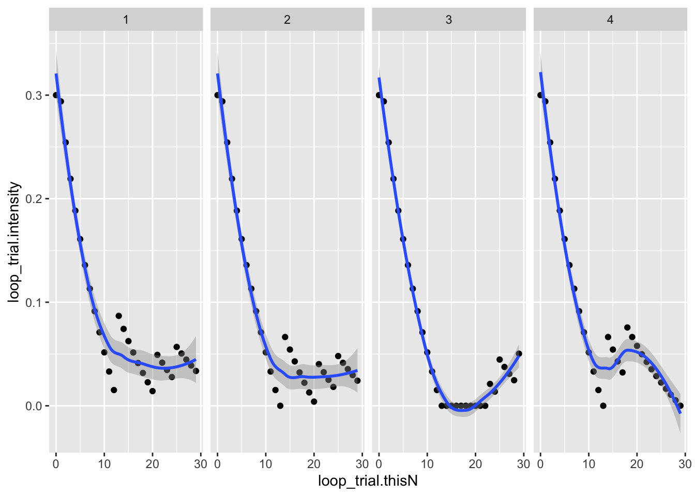
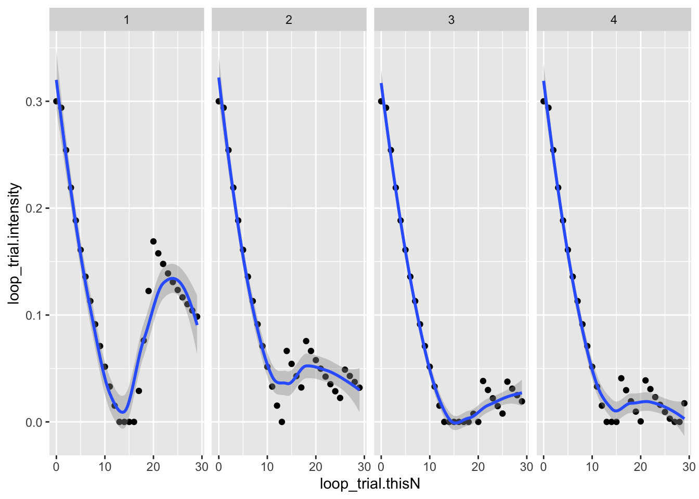

This script imports, summarizes, and shows basic visualizations of an individual’s session data.
csv_files <- list.files(params$path_2_data, pattern = "\\.csv$", full.names = TRUE)
extract_subj_data <- function(fl) {
s_data <- readr::read_csv(fl)
}
# Participant is participant ID YYYYMMDDHHMMSSnn
# Gender should be in c('m', 'f')
# loop_trial.intensity is the contrast level
#
# loop_trial.thisN is in 0..29
# correctAns is left/right for correct orientation
# resp is 1, 0 for correct/incorrect
# resp.rt is RT in seconds
csv_files## [1] "/Users/rick/Box Sync/Project_Sex_difference_on_Motion_Perception/data/contrast_sensitivity_task_data//2019111309492663_contrast_sensitivity_task.csv"
## [2] "/Users/rick/Box Sync/Project_Sex_difference_on_Motion_Perception/data/contrast_sensitivity_task_data//2019111311102420_contrast_sensitivity_task.csv"
## [3] "/Users/rick/Box Sync/Project_Sex_difference_on_Motion_Perception/data/contrast_sensitivity_task_data//2019111313380357_contrast_sensitivity_task.csv"
## [4] "/Users/rick/Box Sync/Project_Sex_difference_on_Motion_Perception/data/contrast_sensitivity_task_data//2019111314560277_contrast_sensitivity_task.csv"
## [5] "/Users/rick/Box Sync/Project_Sex_difference_on_Motion_Perception/data/contrast_sensitivity_task_data//2019111316121877_contrast_sensitivity_task.csv"s1 <- readr::read_csv(csv_files[1])## Warning: Missing column names filled in: 'X62' [62]## Parsed with column specification:
## cols(
## .default = col_double(),
## instrText.stopped = col_character(),
## endInstructions.keys = col_character(),
## endInstructions.stopped = col_character(),
## loop_practice.label = col_character(),
## loop_practice.direction = col_character(),
## loop_practice.stepType = col_character(),
## text.stopped = col_character(),
## key_resp_2.keys = col_character(),
## key_resp_2.stopped = col_character(),
## loop_trial.label = col_character(),
## loop_trial.stepType = col_character(),
## loop_trial.direction = col_character(),
## correctAns = col_character(),
## resp = col_character(),
## Gender = col_logical(),
## date = col_character(),
## expName = col_character(),
## psychopyVersion = col_character(),
## X62 = col_logical()
## )## See spec(...) for full column specifications.s1_subset <- s1 %>%
dplyr::select(., Participant, Gender,
loop_trial.thisN,
loop_trial.intensity,
correctAns,
resp,
resp.rt) %>%
dplyr::filter(., loop_trial.thisN >= 0) %>%
dplyr::mutate(run = rep(1:4, each=30))
s1_subset## # A tibble: 120 x 8
## Participant Gender loop_trial.thisN loop_trial.inte… correctAns resp
## <dbl> <lgl> <dbl> <dbl> <chr> <chr>
## 1 2.02e15 NA 0 0.3 ['left'] left
## 2 2.02e15 NA 1 0.294 ['left'] left
## 3 2.02e15 NA 2 0.254 ['left'] left
## 4 2.02e15 NA 3 0.219 ['left'] left
## 5 2.02e15 NA 4 0.188 ['down'] down
## 6 2.02e15 NA 5 0.161 ['down'] down
## 7 2.02e15 NA 6 0.136 ['down'] down
## 8 2.02e15 NA 7 0.113 ['down'] down
## 9 2.02e15 NA 8 0.0913 ['left'] left
## 10 2.02e15 NA 9 0.0709 ['down'] down
## # … with 110 more rows, and 2 more variables: resp.rt <dbl>, run <int>s1_subset %>% ggplot(.) +
aes(x = loop_trial.thisN, y = loop_trial.intensity) +
facet_grid(. ~ run) +
geom_point() +
geom_smooth()## `geom_smooth()` using method = 'loess' and formula 'y ~ x'
s2 <- readr::read_csv(csv_files[2])## Warning: Missing column names filled in: 'X62' [62]## Parsed with column specification:
## cols(
## .default = col_double(),
## instrText.stopped = col_character(),
## endInstructions.keys = col_character(),
## endInstructions.stopped = col_character(),
## loop_practice.label = col_character(),
## loop_practice.direction = col_character(),
## loop_practice.stepType = col_character(),
## text.stopped = col_character(),
## key_resp_2.keys = col_character(),
## key_resp_2.stopped = col_character(),
## loop_trial.label = col_character(),
## loop_trial.stepType = col_character(),
## loop_trial.direction = col_character(),
## correctAns = col_character(),
## resp = col_character(),
## Gender = col_logical(),
## date = col_character(),
## expName = col_character(),
## psychopyVersion = col_character(),
## X62 = col_logical()
## )## See spec(...) for full column specifications.s2_subset <- s2 %>%
dplyr::select(., Participant, Gender,
loop_trial.thisN,
loop_trial.intensity,
correctAns,
resp,
resp.rt) %>%
dplyr::filter(., loop_trial.thisN >= 0) %>%
dplyr::mutate(run = rep(1:4, each=30))
s2_subset## # A tibble: 120 x 8
## Participant Gender loop_trial.thisN loop_trial.inte… correctAns resp
## <dbl> <lgl> <dbl> <dbl> <chr> <chr>
## 1 2.02e15 FALSE 0 0.3 ['left'] left
## 2 2.02e15 FALSE 1 0.294 ['left'] left
## 3 2.02e15 FALSE 2 0.254 ['left'] left
## 4 2.02e15 FALSE 3 0.219 ['down'] down
## 5 2.02e15 FALSE 4 0.188 ['left'] left
## 6 2.02e15 FALSE 5 0.161 ['left'] left
## 7 2.02e15 FALSE 6 0.136 ['left'] left
## 8 2.02e15 FALSE 7 0.113 ['left'] left
## 9 2.02e15 FALSE 8 0.0913 ['left'] left
## 10 2.02e15 FALSE 9 0.0709 ['down'] down
## # … with 110 more rows, and 2 more variables: resp.rt <dbl>, run <int>s2_subset %>% ggplot(.) +
aes(x = loop_trial.thisN, y = loop_trial.intensity) +
facet_grid(. ~ run) +
geom_point() +
geom_smooth()## `geom_smooth()` using method = 'loess' and formula 'y ~ x'